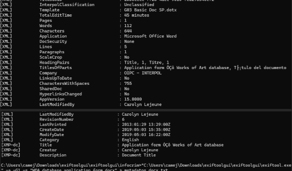
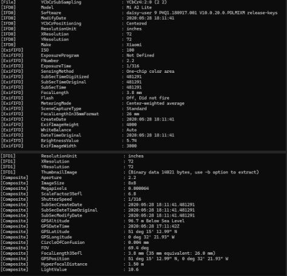

Previsualización de la Investigación — Actividad 12
OBJETIVO
Analizar los metadatos de un documento de Microsoft Word atribuido a INTERPOL y de una fotografía tomada con un dispositivo Xiaomi Mi A2 Lite, mediante ExifTool 12.68 en Windows. El objetivo es identificar información sobre autoría, clasificación, edición, parámetros fotográficos, fechas y coordenadas GPS, así como documentar el proceso de eliminación de metadatos de una copia de la imagen.
AMBIENTE DE LABORATORIO
La actividad se desarrolló en Windows utilizando ExifTool 12.68. Se analizaron los siguientes archivos:
-
WOA database application form.docx: documento utilizado para investigar los metadatos de clasificación, plantilla, autoría y modificación. -
XiaomiMiA2Lite.jpg: fotografía utilizada para identificar los datos EXIF, parámetros de captura, fecha y ubicación GPS.
PARTE I. ANÁLISIS DE METADATOS DEL DOCUMENTO DE INTERPOL
Se examinó el archivo
WOA database application form.docx para
recuperar sus propiedades internas y determinar la
información registrada sobre su creación y modificación.

1. ¿Cómo categorizó el archivo INTERPOL?
El archivo fue categorizado como
Unclassified (no clasificado),
según el campo InterpolClassification.
2. ¿Qué template fue utilizado para la elaboración del archivo por parte de INTERPOL?
La plantilla registrada fue
G03 Basic Doc SP.dotx,
según el campo Template.
3. ¿Cuál fue el tiempo total de edición del fichero?
El tiempo total de edición registrado fue de
45 minutos, según el campo
TotalEditTime.
4. Identifique la compañía propietaria del fichero.
La compañía registrada es
OIPC - INTERPOL,
según el campo Company.
5. ¿Quién realizó la última modificación del fichero?
La última persona que modificó el documento fue
Carolyn Lejeune,
según el campo LastModifiedBy.
6. ¿Cuál fue la fecha de creación del fichero en investigación?
La fecha de creación registrada en los metadatos internos
del documento fue el 3 de mayo de 2019, a las
15:35:00 UTC, según el campo
CreateDate.
Como dato adicional, FileCreateDate indica
que el archivo se creó en el sistema de archivos actual
el 22 de octubre de 2023, a las 12:44:28 (UTC-06:00).
Para conocer la creación del documento, se utilizó como
referencia principal el campo CreateDate.
7. De acuerdo con el análisis de metadatos del fichero de INTERPOL, identifique el creador del mismo.
El creador registrado es
Carolyn Lejeune,
según el campo Creator del grupo
XMP-dc.
PARTE II. ANÁLISIS DE METADATOS DE LA FOTOGRAFÍA XIAOMI MI A2 LITE
En esta segunda parte se analizaron los metadatos EXIF
de XiaomiMiA2Lite.jpg para recuperar los
parámetros de captura, la fecha original y la información
geográfica asociada a la fotografía.

1. ¿Cuál fue la apertura ISO utilizada?
La sensibilidad ISO registrada fue de
ISO 100, según el campo
ISO.
Como precisión técnica, el ISO representa la sensibilidad
fotográfica y no la apertura del diafragma. El valor de
apertura registrado fue f/2.2,
según el campo FNumber.
2. ¿Cuál es la longitud focal de la cámara con la que fue capturada la imagen?
La longitud focal registrada fue de
3.8 mm, según el campo
FocalLength. Su equivalente en formato de
35 mm fue de 26 mm, según
FocalLengthIn35mmFormat.
3. Señale si se utilizó la captura con Flash para obtener la imagen.
No. El campo Flash muestra
Off, Did not fire, lo que indica que el flash
estaba desactivado o no se disparó durante la captura.
4. Señale la fecha de creación del archivo.
Los metadatos EXIF indican que la fecha y hora de captura
registradas fueron el 28 de mayo de 2020, a las
18:11:41, según los campos
DateTimeOriginal y CreateDate.
Como dato adicional, FileCreateDate indica
que el archivo se creó en el sistema de archivos actual
el 27 de diciembre de 2020, a las 08:20:12 (UTC-06:00).
Ambas fechas representan eventos distintos.
5. Identifique los datos de ubicación GPS y señale el lugar exacto donde se tomó la fotografía.
ExifTool recuperó las siguientes coordenadas GPS:
| Dato | Valor registrado |
|---|---|
| Latitud | 51° 15′ 12,99″ N |
| Longitud | 0° 32′ 21,93″ O |
| Altitud registrada | 96,754 m (interpretación de referencia por verificar) |
| Fecha GPS | 28 de mayo de 2020 |
| Hora GPS | 17:11:42 UTC |
Las coordenadas convertidas a formato decimal son:
- Latitud: 51.253608
- Longitud: -0.539425
La ubicación indicada por los metadatos corresponde a la zona de Surrey, Reino Unido.
Consultar ubicación GPS en Google Maps ↗
6. Elimine todos los metadatos de la muestra que se analiza.
Para generar una copia de la fotografía sin sus metadatos se ejecutó el siguiente comando en Windows:
exiftool.exe -all= -o "XiaomiMiA2Lite_sin_metadatos.jpg" "XiaomiMiA2Lite.jpg"Después de la operación, ya no aparecen los campos EXIF de la cámara, la fecha original de captura ni las coordenadas GPS en la copia generada. Permanecen algunos datos técnicos del archivo JPEG y del sistema de archivos.
ANÁLISIS Y CONCLUSIONES
El análisis con ExifTool permitió identificar información de autoría, clasificación, plantilla y edición del documento atribuido a INTERPOL. En la fotografía tomada con un Xiaomi Mi A2 Lite se recuperaron los parámetros de captura, la fecha registrada y las coordenadas GPS que permiten localizar el punto geográfico asociado a la imagen.
Finalmente, la generación y verificación de una copia sin metadatos permitió documentar el procedimiento de eliminación sin alterar la evidencia original. La actividad demuestra que los metadatos pueden revelar información importante sobre un archivo y su contexto, por lo que resulta necesario revisarlos antes de compartir documentos o fotografías.